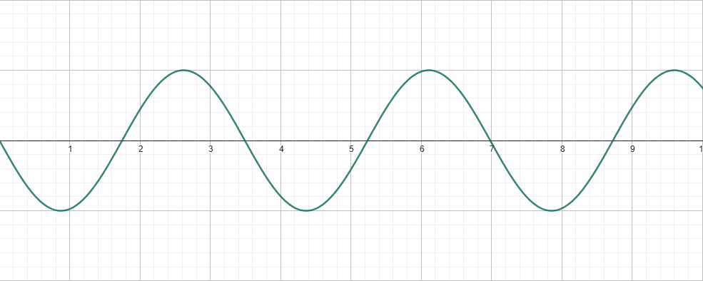
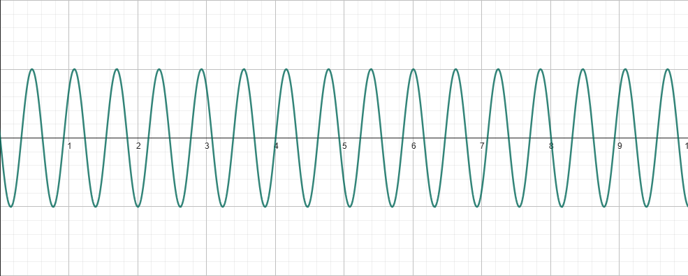
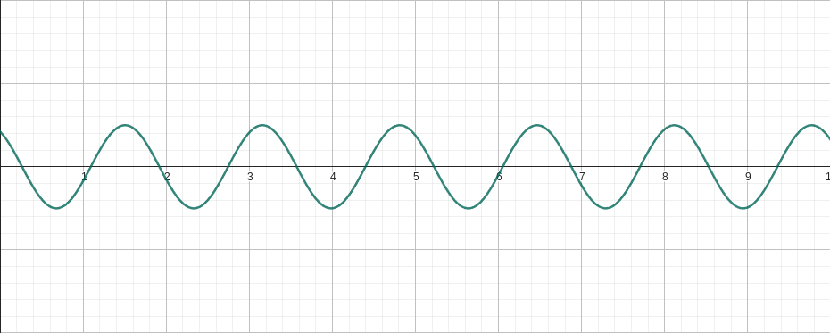
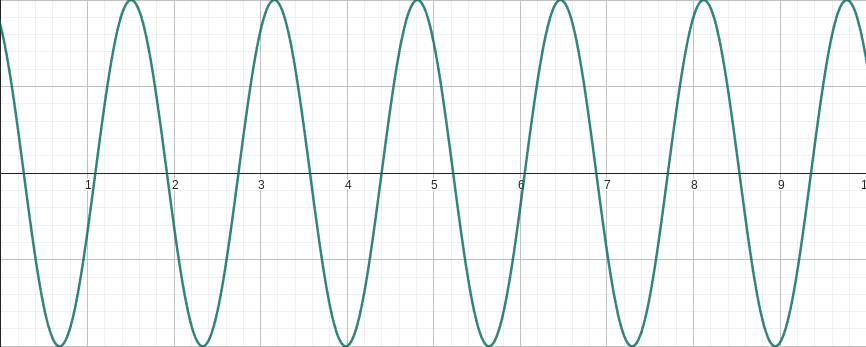

Sobre o site...
Antes de se falar em teoria musical, é interessante que conheça as informações sobre o site e seu objetivo, tais informações podem ser acessadas ao clicar na aba "About" da barra de navegação ou ao clicar aqui.
O que é?
A teoria musical pode ser definida como o instrumento utilizado por músicos no momento de compor algo, quase como um manual de como o instrumento pode ser utilizado para criar diversas composições e sua extensão é praticamente infinita, se dividindo em diversos conceitos.
Conceitos básicos
A quantidade de conceitos dentro da teoria musical é enorme, então, para começar, serão explicados alguns conceitos básicos, sendo eles:
- Som
- Escala cromática
- Intervalos
- Acordes
- Campo Harmônico
Som
O som é uma perturbação de um meio que gera uma onda, possuindo três importantes características ao se falar de música, sendo eles a frequência, a amplitude e o timbre.
A frequência é o quão rápido uma onda sonora oscila, definindo a altura do som, ou seja, define se o som é grave ou agudo.
Onda de baixa frequência
Onda de alta frequência
A amplitude pode ser considerada o "tamanho" da onda sonora, definindo assim o seu volume.
Onda de baixa amplitude
Onda de alta amplitude
O timbre é o formato de uma onda sonora, o que faz com que ondas com mesma amplitude e frequência possuam sons diferentes, e é isso que, por exemplo, nos permite diferenciar o som de um piano quando comparado ao de um violão.